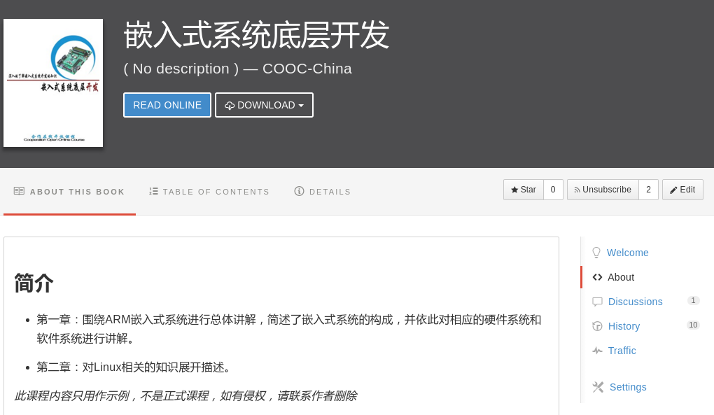
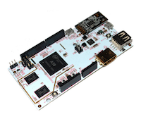
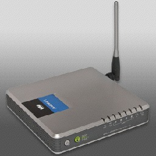
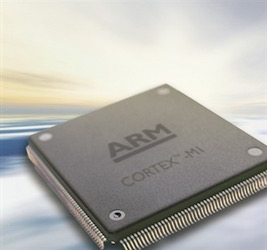
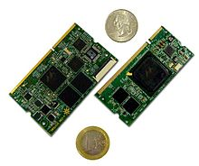
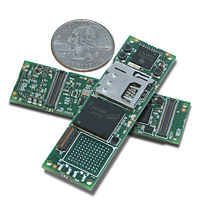
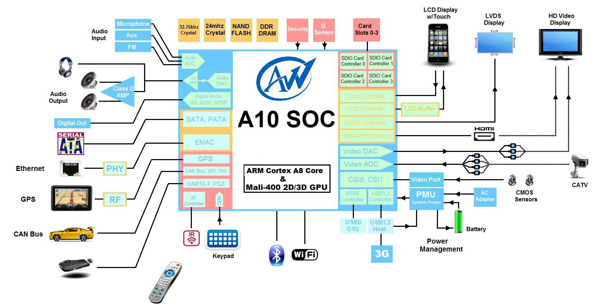
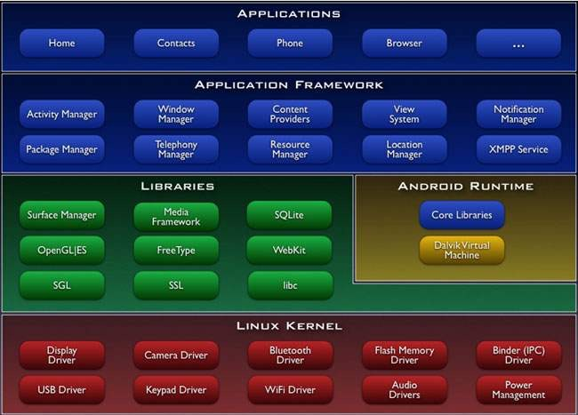

嵌入式系统底层开发
课程简介
嵌入式系统无处不在，本课程旨在带你走进嵌入式系统开发的底层，深入的了解嵌入式系统开发的知识。
学习完本课程你能掌握：
课程正文已迁入本页，由飞书统一维护。

课程正文（COOC-China 授权迁移）
课程简介
嵌入式系统底层开发
简介
*此课程内容只用作示例，不是正式课程，如有侵权，请联系作者删除*
第一章 嵌入式系统导论
第1章 嵌入式系统导论
本章主要围绕ARM嵌入式系统进行总体讲解，并依此对相应的硬件系统和软件系统进行讲解。
嵌入式系统（Embedded system）是一种完全嵌入受控器件内部、为特定应用而设计的专用计算机系统。嵌入式系统的本质就是计算机系统，因而它也是由软件以及硬件构成的。与普通计算机不同，嵌入式系统通常仅拥有非常有限的硬件资源，这种配置使它们的成本大幅下降，但也对软件的优化提出更高的要求。嵌入式系统一般运行固定的程序或固定的操作系统加上可变的应用程序。前者一般为工业系统，仅用于某个特定的控制目的。后者因为有应用程序的加入而更显灵活，一般用于手机、平板电脑。
嵌入式系统概述
1.1 嵌入式系统概述
1.1.1嵌入式系统定义
对于嵌入式系统，我们都知道主导者是Google公司。Google对于嵌入式系统所持有的开放态度，令嵌入式系统在2007年一经发布就风靡全球。Andorid是Google于2007年11月05日发布的基于Linux平台的开源手机操作系统的名称，该平台由操作系统、中间件、用户界面和应用软件组成，是首个为移动终端打造的真正开放和完整的移动软件。2012年11月数据显示，嵌入式系统占据全球智能手机操作系统市场76%的份额，中国市场占有率为90%。2013年09月24日嵌入式系统迎来了5岁生日，全世界采用这款系统的设备数量已经达到10亿台。
这里我们深究的嵌入式系统，是基于Linux Kernel发展起来的嵌入式操作系统。嵌入式系统基于Linux Kernel所做的改动我们将在后续章节进行详细介绍。
本章我们将对嵌入式系统进行系统的介绍。其间我们将涉猎到嵌入式系统所运行的平台、处理器芯片以及相关的技术。
1. 什么是嵌入式系统
嵌入式系统（Embedded system）是一种完全嵌入受控器件内部、为特定应用而设计的专用计算机系统。嵌入式系统的本质就是计算机系统，因而它也是由软件以及硬件构成的。与普通计算机不同，嵌入式系统通常仅拥有非常有限的硬件资源，这种配置使它们的成本大幅下降，但也对软件的优化提出更高的要求。嵌入式系统一般运行固定的程序或固定的操作系统加上可变的应用程序。前者一般为工业系统，仅用于某个特定的控制目的。后者因为有应用程序的加入而更显灵活，一般用于手机、平板电脑。

第一个被大家认可的现代嵌入式系统是麻省理工学院仪器研究室的查尔斯·斯塔克·德雷珀开发的阿波罗导航计算机。 在两次月球飞行中他们在太空驾驶舱和月球登陆舱都是用了这种惯性导航系统。 在计划刚开始的时候，阿波罗导航计算机被认为是阿波罗计划风险最大的部分。 为了减小尺寸和重量而使用的当时最新的单片集成电路加大了阿波罗计划的风险。 第一款大批量生产的嵌入式系统是1961年发布的民兵I导弹上的D-17自动导航控制计算机。 它是由独立的晶体管逻辑电路建造的，带有一个作为主内存的硬盘。当民兵II导弹在1966年开始生产的时候，D-17由第一次使用大量集成电路的更新计算机所替代。 仅仅这个项目就将与非门集成电路模块的价格从每个1000美元降低到了每个3美元，使集成电路的商用成为可能。民兵导弹的嵌入式计算机有一个重要的设计特性：它能够在项目后期对制导算法重新编程以获得更高的导弹精度，并且能够使用计算机测试导弹，从而减轻测试用电缆和接头的重量。 这些二十世纪六十年代的早期应用，使嵌入式系统得到长足发展，它的价格开始下降，同时处理能力和功能也获得了巨大的提高。英特尔4004是第一款微处理器，它在计算器和其他小型系统中找到了用武之地。 但是，它仍然需要外部存储设备和外部支持芯片。 1978年，国家工程制造商协会发布了可编程单片机的“标准”，包括几乎所有以计算机为基础的控制器，如单片机，数控设备，以及基于事件的控制器。 随着单片机和微处理器的价格下降，一些消费性产品用单片机的数字电路取代昂贵模拟组件成为可能。 到了二十世纪八十年代中期，许多以前是外部系统的组件被集成到了处理器芯片中，这种结构的微处理器得到了更广泛的应用。 到了八十年代末期，微处理器已经出现在几乎所有的电子设备中。 集成化的微处理器使得嵌入式系统的应用扩展到传统计算机无法涉足的领域。 对多用途和相对低成本的单片机进行编程，往往可成为各种不同功能的组件。 虽然要做到这一点，嵌入式系统比传统的解决方案要复杂，最复杂的是在单片机本身。 但是嵌入式系统很少有额外的组件，大部分设计工作是软件部分。 而非物质性的软件不管是创建原型还是测试新修改相对于硬件来说，都要容易很多，并且设计和建造一个新的电路不会修改嵌入式处理器。
如今，现代的嵌入式系统一般分为简单嵌入式系统和复杂嵌入式系统。简单嵌入式系统一般被认为是由单片集成控制器作为硬件核心的嵌入式系统，其核心只有一片芯片，却集成了处理器、闪存、内存、数字和模拟外设，这样的系统开发难度低，然而，由于种种限制，其性能一般，适合于自动化、运动控制、电源控制等简单的控制类应用。与之相反，复杂嵌入式系统一般由独立的处理器和闪存内存构成，处理器本身不集成大量的外设，仅作处理任务，类似于传统计算机的CPU。这样的系统灵活多变，一般性能优异，但是成本高昂，普遍用作人机接口、智能设备、手机等要求高性能的场合。
以下是一些嵌入式系统的典型应用：

2. 为什么选择嵌入式系统
多数人认为，他们没有接触过嵌入式系统，嵌入式系统离他们很遥远。其实，嵌入式系统无处不在。从白色家电到大型网络系统，嵌入式系统时时刻刻地在为我们服务。与传统计算机比较，嵌入式系统尽管有开发难度大、通用性差和人机接口普遍落后等劣势，却有着传统计算机所没有的关键优势。
嵌入式系统可以做到极低的成本。一般来说，用于简单工业控制和白色家电的单片机芯片集成了复杂的模拟外设、数字外设，而且不用外界任何存储设备。这样一片芯片往往售价不超过人民币10元，更加令人惊奇的是，这种芯片可以在很宽的电源电压范围工作，又有良好的可靠性，从而进一步降低了对外部环境的需求，使微电脑控制技术得以广泛普及。

嵌入式系统极其可靠。一般说来，系统中串联工作的部件越多，系统的可靠性越差；系统中并联工作的部件越多，系统的可靠性越好。这里的串联指的是相互依赖的工作方式，并联指互为冗余的工作方式。嵌入式系统往往有更精简的结构，从而使得嵌入式系统有更少的出错机会。硬件上讲，各模块之间的依赖关系更加清晰，模块数量精简，从而使串联部件减少。软件上讲，由于使用了定制的操作系统和应用程序，甚至没有操作系统，从而使得软件组件大幅减少，也减少了串联部件。另一方面，由于结构精简，从而可以留出更多成本预算来做冗余。这样，在减少串联部件的同时增加并联部件，使得嵌入式系统可以提供传统计算机系统所难以比拟的高可靠性。
嵌入式系统极其高效。虽然绝大多数的嵌入式系统拥有较差的计算资源，它们通常仍能完成任务。与通用计算机不同，嵌入式系统的硬件、软件都可以根据实际需求而加以定制。这使得系统得以精简。除了提高系统的可靠性，精简的系统还能减少硬件资源，尤其是CPU资源和内存资源的浪费。设想一台主频只有16MHz的计算机是什么样子，然而，多数用于工业控制的单片机的主频不超过16MHz，却能井井有条地控制大型机械设备。对于某些超高性能需求，因为传统计算机系统的低效、臃肿，嵌入式系统是唯一的选择。比如说大型电信路由器或网络安全设备，因为需要处理大量的数据请求，还不能带来太多的网络延迟或丢包，高效的专用处理器就成为了唯一的选择。它们被制成功能单一的芯片，只能做一种简单的任务，却有着极其强大的性能。如果采用通用计算机来支撑我们的网络社会，可能成本要高得多得多，甚至无法实现。
嵌入式系统体积小、功耗低。手机、平板电脑都是嵌入式系统，却也有着不逊于传统计算机系统的性能。一般来说，嵌入式系统的功耗不会大于20瓦。多数的单片机功耗在几十毫瓦左右，而多数复杂嵌入式系统的功耗不过几百毫瓦。即使是最先进的手机系统，其峰值功耗不过二三瓦，而其平均功耗不过二三百毫瓦或更低。反观传统计算机，即使是最省电的笔记本电脑也要消耗数十瓦的功率。在减小功耗的同时，嵌入式系统的散热问题也随之消失，更简单的电源管理和几乎没有的散热装置使得嵌入式系统能拥有更小的体积。


3. 如何选择
如前文所述，嵌入式系统可分成简单嵌入式系统和复杂嵌入式系统。简单嵌入式系统一般为单片机，比如MCS51系列、PIC系列、AVR系列和新兴的MSP430系列。这些单片机成本低廉，外设丰富，而且在上电后立即可以运行，适合对性能要求不高的控制类应用。典型用例如智能仪表、电机控制、可穿戴传感器和数字电源等。
复杂嵌入式系统的构成则要复杂得多，其性能、成本也高得多。一般来说，该类系统包括基于DSP的嵌入式系统、基于ARM的嵌入式系统、基于MIPS的嵌入式系统和基于x86的嵌入式系统。基于DSP的嵌入式系统一般用于处理大量的数据，典型应用为语音处理、雷达信号处理等。基于MIPS的嵌入式系统一般应用于通用计算，因为MIPS在开发之初被用于通用处理器。基于x86的嵌入式系统实际上就是把传统的计算机压缩、精简，一般因其强大的性能与兼容性被用于对成本、功耗要求不高的场合，比如工业计算机等。
复杂嵌入式系统中最常见的要属基于ARM的嵌入式系统，以下简称ARM系统。ARM系统通常拥有足够的硬件资源和相对较低的功耗，这使得ARM处理器非常适用于复杂的工业环境和移动终端，这当中绝大部分就在于嵌入式系统操作系统。
1.1.2 嵌入式系统构成
1.1.2 嵌入式系统构成
1．嵌入式系统架构概述
嵌入式系统由软件和硬件构成。硬件部分包括微处理器、内存、闪存/硬盘、外部设备等。软件部分则包括引导器、操作系统、文件系统、用户程序等。对于简单嵌入式系统来说，硬件部分通常只是一块单片机芯片，集成了所需的全部硬件资源，而软件部分则只是一个单一的二进制文件，包含全部的代码、常数、存储分配结构等。本书研究基于ARM处理器和嵌入式系统操作系统的复杂嵌入式系统。
2．嵌入式系统概述
嵌入式系统是一种基于Linux内核的自由及开放源代码的操作系统，主要使用于移动设备，如智能手机和平板电脑，由Google公司和开放手机联盟领导及开发。嵌入式系统操作系统最初由Andy Rubin开发，主要支持手机。2005年8月由Google收购注资。2007年11月，Google与84家硬件制造商、软件开发商及电信营运商组建开放手机联盟共同研发改良嵌入式系统。随后Google以Apache开源许可证的授权方式，发布了嵌入式系统的源代码。第一部嵌入式系统智能手机HTC G1发布于2008年10月。嵌入式系统逐渐扩展到平板电脑及其他领域上，如电视、数码相机、游戏机等。2011年第一季度，嵌入式系统在全球的市场份额首次超过塞班系统，跃居全球第一。 嵌入式系统一词的本义指“机器人”，该平台由操作系统、中间件、用户界面和应用软件组成。
2008年，在GoogleI/O大会上，谷歌提出了嵌入式系统 HAL架构图，在同年08月18日，嵌入式系统获得了美国联邦通信委员会的批准。在2008年09月，谷歌正式发布了嵌入式系统 1.0系统，这也是嵌入式系统最早的版本。
2009年4月，谷歌正式推出了嵌入式系统 1.5，从嵌入式系统 1.5版本开始，谷歌开始将嵌入式系统的版本以甜品的名字命名，嵌入式系统 1.5命名为Cupcake。该系统与嵌入式系统 1.0相比有了很大的改进。
2009年09月份，谷歌发布了嵌入式系统 1.6的正式版，并且推出了搭载嵌入式系统 1.6正式版的HTC G3手机，凭借着出色的外观设计以及全新的嵌入式系统 1.6操作系统，HTC G3成为当时全球最受欢迎的手机。嵌入式系统 1.6也有一个有趣的甜品名称，即Donut。
2010年2月份，Linux内核开发者Greg Kroah-Hartman将嵌入式系统的驱动程序从Linux内核staging tree上除去。从此，嵌入式系统与Linux开发主流分道扬镳。在同年5月份，谷歌正式发布了嵌入式系统 2.2操作系统。谷歌将嵌入式系统 2.2操作系统命名为Froyo。
2010年10月份，谷歌宣布嵌入式系统达到了第一个里程碑，即电子市场上获得官方数字认证的嵌入式系统应用数量已经达到了10万个，嵌入式系统的应用增长非常迅速。在2010年12月，谷歌正式发布了嵌入式系统 2.3操作系统Gingerbread。
2011年1月，谷歌宣布每日的嵌入式系统设备新用户数量达到了30万部，到2011年7月，这个数字增长到55万部，而嵌入式系统设备的用户总数达到了1.35亿，嵌入式系统已经成为智能手机领域占有量最高的系统。
2011年8月2日，嵌入式系统手机已占据全球智能机市场48%的份额，并在亚太地区市场占据统治地位，终结了Symbian的霸主地位，跃居全球第一。
2011年9月份，嵌入式系统的应用数目已经达到了48万，而在智能手机市场，嵌入式系统的占有率已经达到了43%，继续排在移动操作系统首位。全新的嵌入式系统 4.0操作系统于2008年9月23日发布，这款系统被谷歌命名为Ice Cream Sandwich。
2012年01月6日，谷歌嵌入式系统 Market已有10万开发者推出超过40万活跃的应用，大多数的应用程序为免费。嵌入式系统 Market应用程序商店目录在新年首周周末突破40万基准，距离突破30万应用仅个月。在2011年早些时候，嵌入式系统 Market从20万增加到30万应用也花了四个月。
3. 嵌入式系统的优势
(1).开放性 在优势方面，嵌入式系统平台首先就是其开放性，开放的平台允许任何移动终端厂商加入到嵌入式系统联盟中来。显著的开放性可以使其拥有更多的开发者，随着用户数量的增多和应用的日益丰富，一个崭新的平台也将很快走向成熟。
(2).运营商的鼎力支持 在国内，三大运营商是卯足了劲的推出嵌入式系统智能机。联通的“0元购机”，电信的千元3G，移动的索爱A8i定制机，都显示了运营商对嵌入式系统智能机的期望。在美国，T-Mobile、Sprint、AT&T和Verizon全部推出了嵌入式系统手机。此外，日本的KDDI，NTT DoCoMo，Telecom Italia(意大利电信)、T-Mobile (德国)、Telefónica( 西班牙)等众多运营商都是嵌入式系统的支持者。有这么多的运营商支持嵌入式系统，自然会占据巨大的市场份额。相对于嵌入式系统的运营商联盟，只有AT&T一家运营商销售iPhone。
(3).丰富的硬件选择 这一点还是与嵌入式系统平台的开放性相关，由于嵌入式系统的开放性，众多的厂商会推出千奇百怪，功能特色各具的多种产品。功能上的差异和特色，却不会影响到数据同步，甚至软件的兼容、好比你从诺基亚Symbian风格手机一下改用苹果iPhone，同时还可将Symbian中优秀的软件带到iPhone上使用、联系人等资料更是可以方便地转移，是不是非常方便呢？现在，世界很多智能手机厂家几乎都加入了嵌入式系统阵营，并推出了一系列的嵌入式系统智能机。摩托罗拉、三星、HTC、LG、Lumigon等厂家都与谷歌建立了嵌入式系统平台技术联盟。厂商加盟的越多，手机终端就会越多，其市场潜力就越大。嵌入式系统智能机最近六个月在美国市场的占有率足以说明这一点。
(4).不受任何限制的开发商 智能手机倚仗的是其上应用程序功能的实现，但是随着嵌入式系统的推广与普及，应用程序数量呈数量级增长，嵌入式系统应用在可预见的未来是有能力与苹果相竞争的。而来自嵌入式系统应用商店最大的优势是，不对应用程序进行严格的审查。
(5).无缝结合Google的应用 如今互联网的Google已经走过10年的历史，从搜索巨人到全面的互联网渗透，Google服务如地图、邮件、搜索等已经成为连接用户和互联网的重要纽带，而嵌入式系统平台将无缝结合这些优秀的Google服务。
4．基于嵌入式系统硬件构成

为了支持嵌入式系统的正常运行，一个典型的系统应具备ARM嵌入式处理器、内存、闪存、电源管理系统、音频子系统、显示屏和触摸屏。
如图1-6所示，该图以基于全智科技的A10应用处理器的嵌入式系统为例，介绍了一个 无线IP电话硬件系统的构成。嵌入式系统操作系统运行在基于ARM核心的A10处理器上，而GPU部分运行图像加速算法。ARM处理器控制片上外设，片上外设控制系统的其他设备，比如音频控制器、背光控制器等。A10 SoC通过USB等接口对外实现有线和无线通信。
5. 嵌入式系统软件构成
嵌入式系统软件部分包含引导器、操作系统、文件系统和用户程序等。以嵌入式系统为例，系统引导器（通常是U-Boot）在系统上电之后首先运行，该程序负责处理器的初始化、内存、闪存的初始化，并解压缩操作系统内核，然后将控制权交给操作系统。操作系统包含内核和用户态程序。嵌入式系统的内核是Linux，Linux在加载后挂载文件系统，并从中加载用户态程序。其中嵌入式系统的用户态程序包含启动管理、Java虚拟机、系统库函数等。在完成嵌入式系统的加载后，嵌入式系统会自动加载默认的桌面应用程序。至此，嵌入式系统完成启动过程。

引导器部分含设备相关的、与底层打交道的代码，这部分常用汇编语言和C语言编写。Linux内核部分包含部分设备相关代码，比如CPU的优化指令等，以及大量的外设驱动。这部分将是我们移植嵌入式系统的重点。嵌入式系统虚拟机和Linux用户态库文件提供应用程序与Linux内核沟通的机制，并实现大量的扩展功能。如果要开发自定义的嵌入式系统，就少不了开发指定的用户态库文件。如果嵌入式系统是用于特定目的的，一般还要为应用程序（APK）开发对应的底层库文件及JNI库。这部分也是嵌入式系统移植的重点。再上层是应用程序框架，该部分提供应用程序可以调用的Java包，它们实现了多数的嵌入式系统 API，是应用开发的重点。最上层是应用程序，该部分由第三方开发，与系统移植无关。
1.1.3 移动电话系统
1.1.3 移动电话系统
1．移动开发
移动开发也称为手机开发，或叫做移动互联网开发，是指以手机、PDA、UMPC等便携终端为基础进行相应的开发工作。由于这些随身设备基本都采用无线上网的方式，因此，业内也称作为无线开发。
移动应用开发是为小型、无线计算设备编写软件的流程和程序的集合，像智能手机或者平板电脑。移动应用开发类似于Web应用开发，起源于更为传统的软件开发，但关键的不同在于移动应用通常利用一个具体移动设备提供的独特性能编写软件。
2. 未来移动电话的功能
以目前的科学技术来看，未来的移动电话可能包含如下功能：
(1).更智能的语音接口 未来手机很可能大范围应用语音功能。不同于现在的语音检索，未来的语音功能会更加完善，功能更多、识别更准确，而且可以与你的生活融为一体。
(2).互动投影 如果想把手机做得更小，又能提供丰富的娱乐体验，那就只能把把触摸屏幕换成互动投影仪，这种变更会使得手机变得更小、显示面积却变得更大。
(3).云计算 受电池和发热的限制，手机不太可能拥有非常豪华的硬件配置。然而，随着超高带宽的WiFi和4G的普及，软件开发者可以把复杂但是带宽略低的应用运行在服务器上，从而使手机只负责最终的用户界面。
(4).新型显示屏 影响手机厚度的主要因素之一就是屏幕。如果屏幕能是简单的一块玻璃或者聚合物，那么手机的整体厚度就会大幅减少，而且随着柔性显示技术的发展，以后甚至可能制造出可以弯折的屏幕，从而进一步扩大显示面积，降低重量。
(5).高级图像技术 现在已经有越来越多的数码相机提供WiFi分享等功能。未来，高性能的图像传感器可能被集成在手机里面，这样就可以发挥手机的处理能力和联网能力，实现移动的图像捕捉和处理、分享。值得一提的是，现在已经有公司在尝试推出集成相机级别的摄像功能的手机了。
(6).模块化技术 在购买手机时，我们常常会因为手机的某个功能不够强大而考虑其他的型号。模块化的设计使得手机最核心的部件以外的大多数部件都可以由用户自行更换。这种设计类似PC机，用户可以买来选配的模块来升级他们的系统或为他们的系统添加新的功能。
课程讲义
实验1-Linux嵌入式开发-Galileo介绍
原始在线演示未迁入；请在飞书中维护本地课件或附件。
实验2-Linux嵌入式开发-Linux命令及开发板使用
原始在线演示未迁入；请在飞书中维护本地课件或附件。